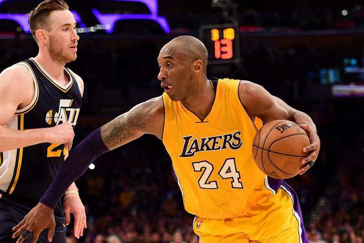

HISTORY
NBA Draft 1996
1996年NBAドラフトに高卒でアーリーエントリーした。
当時の大スターであるあのマイケル・ジョーダンと対戦したかった事が
理由の一つである。
当時のNBAでは高卒のプレイヤーが活躍できるとは思っておらず
コービーへの期待はそこまで高いものではなかった。
全体13位指名でシャーロット・ホーネッツから指名されるが
直後のトレードで名門レイカーズに入団する。
96-97 ROOKIE SEASON
1996年、チームの大黒柱シャックこと、シャキール・オニール有するレイカーズで
コービーのNBAキャリアはスタートする。
出場時間は平均15分と、出番が多い選手ではなかった。
チームで故障者が多発していた影響で初めて選抜出場した試合で
当時の選抜出場最年少記録を塗り替えた。
オールスター・ウィークエンドのダンクコンテストでは最年少優勝を果たす。
99-20 1ST TIME CHAMPION
1999-2000シーズン、マイケル・ジョーダンと共にシカゴ・ブルズで2度の3連覇を果たした
新監督のフィル・ジャクソンが就任した事でチームは快進撃を続けた。
このシーズンのMVPを獲得したシャックの活躍もあったが
コービー自身も初のシーズン平均20得点越えをするなど、攻守共にハイレベルな選手へと成長した。
コービーにとっては4シーズン目で、初の優勝を果たす。
01-02 THE 3PEAT
2001-02シーズン、平均25.2得点という高水準をマーク。
この頃には常連になっていたオールスターゲームでは初のMVPを獲得。
前年も優勝を果たしており、シャックと共に3連覇を果たす。
当時23際のコービーは、史上最年少で3度の優勝をした選手となった。
07-08 SEASON MVP

コービーはシーズン開幕当初にチームの改善のために首脳陣が最善を尽くしていないと非難し
後になって撤回しものの一時はトレードを志願したほどだった。
しかし、後に共に優勝を果たすガソールの加入もありチームは調子を上げていった。
このシーズン、コービーは28.3得点6.3リバウンド5.4アシストを記録。
チームに尽力した功績が評価され、自身初となるシーズンMVPを受賞する。
09-10 5th CHAMPIONSHIP
2009-2010シーズン、31歳になるコービーは満身創痍だった。
右手人差し指の剥離骨折を始め、足首、膝、腰と試合ごとに怪我が蓄積した。
そんな中、コービーは勝負を決める決勝ブザービーターを何度も沈め
人々にその勝負強さを焼き付けた。
そしてコービーは2連覇を成し遂げキャリア5度目の優勝を果たす。
15-16 60pt IN LAST GAME

2015-16シーズン、コービーは”親愛なるバスケットボールへ”とメッセージを発表し
正式に現役引退を表明した。
マイケル・ジョーダン、サッカー選手のリオネル・メッシなどが声明を発表し
オバマ元大統領からホワイトハウスに招待されるなど
コービーの引退発表は各方面に影響を及ぼした。
現役最後の試合、ファンに迎えられ出場したコービーはなんと60得点を記録。
60得点以上を記録した史上最年長選手となり優秀の美を飾った。